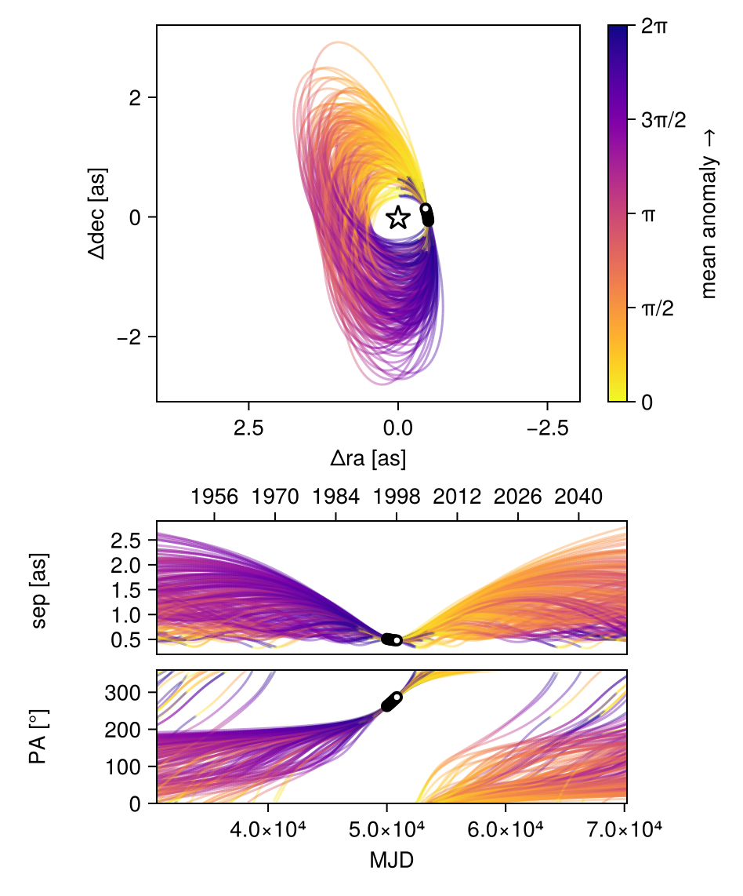
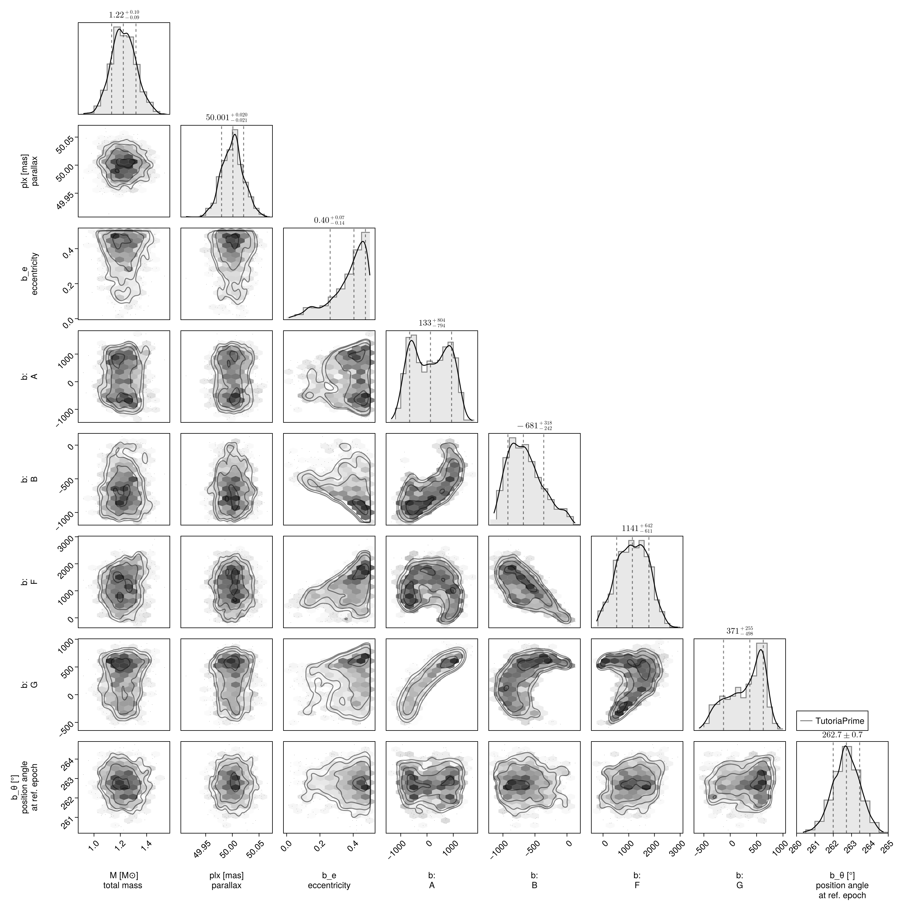

Fit with a Thiele-Innes Basis
This example shows how to fit relative astrometry using a Thiele-Innes orbital basis instead of the traditional Campbell basis used in other tutorials. The Thiele-Innes basis is more suitable then Campbell for fitting low-eccentricity orbits, because it does not have the issues where ω, Ω, and tp become degenerate as eccentricity and/or inclination fall to zero.
At the end, we will convert our results back into the Campbell basis to compare.
using Octofitter
using CairoMakie
using PairPlots
using Distributions
astrom_like = PlanetRelAstromLikelihood(
(epoch = 50000, ra = -505.7637580573554, dec = -66.92982418533026, σ_ra = 10, σ_dec = 10, cor=0),
(epoch = 50120, ra = -502.570356287689, dec = -37.47217527025044, σ_ra = 10, σ_dec = 10, cor=0),
(epoch = 50240, ra = -498.2089148883798, dec = -7.927548139010479, σ_ra = 10, σ_dec = 10, cor=0),
(epoch = 50360, ra = -492.67768482682357, dec = 21.63557115669823, σ_ra = 10, σ_dec = 10, cor=0),
(epoch = 50480, ra = -485.9770335870402, dec = 51.147204404903704, σ_ra = 10, σ_dec = 10, cor=0),
(epoch = 50600, ra = -478.1095526888573, dec = 80.53589069730698, σ_ra = 10, σ_dec = 10, cor=0),
(epoch = 50720, ra = -469.0801731788123, dec = 109.72870493064629, σ_ra = 10, σ_dec = 10, cor=0),
(epoch = 50840, ra = -458.89628893460525, dec = 138.65128697876773, σ_ra = 10, σ_dec = 10, cor=0),
)
@planet b ThieleInnesOrbit begin
e ~ Uniform(0.0, 0.5)
A ~ Normal(0, 10000) # milliarcseconds
B ~ Normal(0, 10000) # milliarcseconds
F ~ Normal(0, 10000) # milliarcseconds
G ~ Normal(0, 10000) # milliarcseconds
θ ~ UniformCircular()
tp = θ_at_epoch_to_tperi(system,b,50000.0) # reference epoch for θ. Choose an MJD date near your data.
end astrom_like
@system TutoriaPrime begin
M ~ truncated(Normal(1.2, 0.1), lower=0.1)
plx ~ truncated(Normal(50.0, 0.02), lower=0.1)
end b
model = Octofitter.LogDensityModel(TutoriaPrime)LogDensityModel for System TutoriaPrime of dimension 9 and 9 epochs with fields .ℓπcallback and .∇ℓπcallback
We now sample from the model as usual:
using Random
Random.seed!(0)
results = octofit(model)Chains MCMC chain (1000×24×1 Array{Float64, 3}):
Iterations = 1:1:1000
Number of chains = 1
Samples per chain = 1000
Wall duration = 6.1 seconds
Compute duration = 6.1 seconds
parameters = M, plx, b_e, b_A, b_B, b_F, b_G, b_θy, b_θx, b_θ, b_tp
internals = n_steps, is_accept, acceptance_rate, hamiltonian_energy, hamiltonian_energy_error, max_hamiltonian_energy_error, tree_depth, numerical_error, step_size, nom_step_size, is_adapt, loglike, logpost, tree_depth, numerical_error
Summary Statistics
parameters mean std mcse ess_bulk ess_tail ⋯
Symbol Float64 Float64 Float64 Float64 Float64 Fl ⋯
M 1.2254 0.0926 0.0042 475.7282 421.8274 0 ⋯
plx 50.0005 0.0204 0.0006 1032.8668 660.2736 0 ⋯
b_e 0.3714 0.1109 0.0055 408.5747 523.2540 1 ⋯
b_A 135.2133 696.5279 55.7581 176.4127 449.1617 1 ⋯
b_B -652.3997 269.5786 22.2115 165.4101 183.8227 1 ⋯
b_F 1152.0601 591.8098 44.1811 180.2359 161.6882 1 ⋯
b_G 291.9086 341.5316 29.0694 155.7467 179.7717 1 ⋯
b_θy -0.1283 0.0183 0.0008 573.9406 473.6872 1 ⋯
b_θx -1.0036 0.1007 0.0040 655.5552 538.3843 1 ⋯
b_θ -1.6980 0.0127 0.0006 484.3114 658.1467 1 ⋯
b_tp 18383.6600 31642.5264 1835.8485 376.1603 592.8288 1 ⋯
2 columns omitted
Quantiles
parameters 2.5% 25.0% 50.0% 75.0% 97.5% ⋯
Symbol Float64 Float64 Float64 Float64 Float64 ⋯
M 1.0505 1.1616 1.2229 1.2892 1.4113 ⋯
plx 49.9596 49.9870 50.0010 50.0127 50.0410 ⋯
b_e 0.0923 0.3173 0.4042 0.4567 0.4946 ⋯
b_A -983.1152 -513.0891 132.5502 764.8971 1256.7471 ⋯
b_B -1072.6916 -857.6976 -680.5568 -483.7441 -35.6342 ⋯
b_F 4.5649 695.1165 1141.4771 1595.7197 2222.1430 ⋯
b_G -386.3848 22.9326 371.1486 582.4818 767.7593 ⋯
b_θy -0.1669 -0.1394 -0.1271 -0.1153 -0.0969 ⋯
b_θx -1.2220 -1.0685 -1.0021 -0.9301 -0.8278 ⋯
b_θ -1.7246 -1.7066 -1.6979 -1.6893 -1.6732 ⋯
b_tp -46346.0912 -4772.5657 25043.2881 48492.5692 49785.1197 ⋯
Notice that the fit was very very fast! The Thiele-Innes orbital paramterization is easier to explore than the default Campbell in many cases.
We now display the results:
octoplot(model,results)
octocorner(model, results, small=false)
Conversion back to Campbell Elements
To convert our chain into the more familiar Campbell parameterization, we have to do a few steps. We start by turning the chain table into a an array of orbit objects, and then convert their type:
orbits_ti = Octofitter.construct_elements(results, :b, :) # colon means all rows1000-element Vector{ThieleInnesOrbit{Float64}}:
ThieleInnesOrbit{Float64}(0.07188285055546366, 44307.035566905965, 1.411280901258478, 50.01570876973043, -954.3982035455749, -237.9107918992057, 39.75883569646652, -487.0885564243516, 1.8152744764540567, -17.163005282573774, 26985.234392568356, 0.08504404297779088, 1.0746629155835823)
ThieleInnesOrbit{Float64}(0.04669959198389838, 43583.490192480196, 1.3791814613149795, 49.982458594102766, -1010.6074893420907, -215.97368375072975, 52.64396240351226, -483.92505978541607, 1.124032757242033, -18.273032576616384, 29305.05169956755, 0.07831187117411602, 1.0478428106094615)
ThieleInnesOrbit{Float64}(0.024946257985071385, 43486.0611136482, 1.3157349918279073, 49.97579094373779, -854.802587935945, -103.22142839681825, -175.90280201534074, -531.9175215082178, 5.751029379426247, -14.29075463918284, 24649.012396713788, 0.09310447804202107, 1.0252653270328962)
ThieleInnesOrbit{Float64}(0.3747785379713917, 47190.84140599852, 1.1948695636892208, 50.023108744031724, -900.6300688755681, -665.9789731233266, 415.10060632431623, -421.764697302155, -1.9440015414686478, -19.111053652684728, 35605.99746262217, 0.06445356392154099, 1.4828575508292672)
ThieleInnesOrbit{Float64}(0.40426919166825376, 48770.28274686632, 1.223100431569739, 49.97651575110772, -549.87290900817, -728.4007879843654, 463.20043502936903, -363.0588009226138, 0.2796563649635728, -13.96015029741743, 25778.06708861507, 0.08902659092158642, 1.5353244065801703)
ThieleInnesOrbit{Float64}(0.46360608045218005, 25691.550827470473, 1.4265101113840384, 50.00167972783454, 3.345218878288314, -931.1662565718257, 588.1903648119189, 12.383179658686126, -0.2649365597492647, -14.437465384340136, 24580.746818759697, 0.0933630475253047, 1.6518483712937717)
ThieleInnesOrbit{Float64}(0.3981173607938399, 48319.7681336733, 1.1052357868164226, 50.005111569806346, -668.3402967471718, -660.4046379797517, 438.78303165968384, -426.26456728751884, -0.3293829723872482, -14.265318374730038, 28304.20683637892, 0.08108100137601118, 1.52410857285652)
ThieleInnesOrbit{Float64}(0.40421708585832816, 48300.33638166106, 1.1094257044038707, 50.04094661291647, -679.5476880758506, -674.7200911716113, 444.14390911282084, -422.0927088033059, -0.4620008101543577, -14.713990862735708, 29042.853902264804, 0.07901886781410217, 1.5352287837888645)
ThieleInnesOrbit{Float64}(0.425390995093432, 49189.953906805014, 1.2062170873518254, 49.964379023763485, -436.07412810300116, -856.539171562686, 600.4643262202105, -215.13083457938006, -2.1360609398991977, -14.548204129738563, 28318.942212118876, 0.08103881198165815, 1.5750008465641534)
ThieleInnesOrbit{Float64}(0.42704727550285654, 49074.15793631979, 1.2488033622830923, 50.03300348322928, -489.755058076517, -825.8417604214328, 570.6328026206344, -296.4830782975917, -0.9683135780784666, -14.283196661967397, 27529.52341956508, 0.08336262849419135, 1.578191812274103)
⋮
ThieleInnesOrbit{Float64}(0.47923886297577317, 33138.12591630897, 1.3858171803765187, 49.988514490872426, 714.3587494742144, -178.84671539883772, 4.777885566166065, 647.362149121858, -5.1604213356806, -8.713793169295043, 19134.48961262331, 0.11993700798443778, 1.685387896818492)
ThieleInnesOrbit{Float64}(0.43693275968983797, 30390.849510930977, 1.2748343248845915, 50.006195404905974, 830.1086577378625, -86.1579056371243, -55.27940501183248, 601.1882440158225, -3.261984357963581, -11.975634281620655, 22685.05261095844, 0.10116500379367573, 1.5974897961021235)
ThieleInnesOrbit{Float64}(0.3345303250281618, 35658.16277230798, 1.209792818966164, 49.99377444397396, 688.711837106205, 8.00186690706299, -98.19223714130759, 535.4797585809803, -2.845568963062509, -8.906070516996394, 17521.723980277053, 0.1309764630484184, 1.4161201048460725)
ThieleInnesOrbit{Float64}(0.2642410404921396, 40276.75763269707, 1.2004756328945083, 49.97878598483388, 456.93160424927174, -48.70684290569264, -8.321936498204437, 537.2404219521943, -5.927750044243474, -2.024058897597159, 12062.023938602473, 0.19026105777346342, 1.3108323856889208)
ThieleInnesOrbit{Float64}(0.4403289628263722, 14592.395415591403, 1.2435898695747505, 50.00709213393938, 1121.8781628991937, -304.59152361935656, 433.4514650952755, 648.4769652426982, 6.292819072688379, -18.349629559733078, 38710.72811070998, 0.05928417122209623, 1.6042218617710935)
ThieleInnesOrbit{Float64}(0.4450477303186397, -4758.406865728168, 1.1075613017709105, 49.997759546508135, 1305.0884800258402, -331.4404354776472, 792.2738026718314, 679.7742649684385, -14.481127679495755, 22.339564428935077, 58685.021556678854, 0.03910594854652756, 1.6136646312779293)
ThieleInnesOrbit{Float64}(0.4745139467027515, 48872.928415361144, 1.3462782275600467, 49.99433620504603, -680.9450237939042, -1047.3132978698761, 1548.9840674235381, 99.04494023321107, -25.756101988735736, -17.99599305720849, 67670.88193144415, 0.03391315981033451, 1.675111982653618)
ThieleInnesOrbit{Float64}(0.45425769061244115, 49530.17970750025, 1.125419408091434, 50.007964253353535, -349.5569718764395, -917.663536121868, 1630.0266267094614, 67.9147948437009, -27.613308698240726, -9.153684349965218, 67908.3740315572, 0.03379455724239373, 1.6324010761930476)
ThieleInnesOrbit{Float64}(0.482475098778663, 49528.73263026309, 1.286984387418285, 50.01208860105592, -354.2371985611996, -1042.0441386779105, 1700.1366051606378, 318.13798048044004, -29.524216906539234, -12.644726137374036, 71945.23422922862, 0.03189833847972934, 1.6924976644037677)Here is one of those entries:
display(orbits_ti[1])We can now make a table of results (and visualize them in a corner plot) by querying properties of these objects:
table = (;
B_a = semimajoraxis.(orbits_ti),
B_e = eccentricity.(orbits_ti),
B_i = rad2deg.(inclination.(orbits_ti)),
)
pairplot(table)We can also convert the orbit objects into Campbell parameters:
orbits_campbell = Visual{KepOrbit}.(orbits_ti)
orbits_campbell[1]KepOrbit{Float64}
─────────────────────────
a [au ] = 19.7
e = 0.071882851
i [° ] = 60.9
ω [° ] = 174.0
Ω [° ] = 16.9
tp [day] = 44300.0
M [M⊙ ] = 1.41
period [yrs ] : 73.9
mean motion [°/yr] : 4.87
──────────────────────────
plx [mas] = 50.0
distance [pc ] : 20.0
──────────────────────────